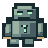

Коко / битва тонов
Башня хитрого мага
0 / 30
МАГИСТР КОКО
«Хе-хе! Стражи ждут грубой силы. А мы обойдём их слухом!»
Готовность0 / 3
Сначала послушай все четыре мелодии
Подготовка к приключению
Стражи атакуют китайскими слогами — узнавай тон на слух и отражай его руной. 4 этажа · 30 атак · финальный код.
-
Проверь звукПослушано: 0 из 4 — обязательный шаг
-
Правила бояКак работают щит и уронЩит: 3 заряда. Ошибка — минус, верная руна — плюс. Пустой щит — не проигрыш.Здоровье стража: −1 сегмент за каждую впервые отражённую атаку. Всего 30.
-
РазминкаПробная атака без риска — по желанию
Хе-хе, попробуй хитрый план на пробном страже! Это не влияет на приключение.
Стражи башниЧетверо противников
Наушники предпочтительнее · записи синтезированы · таймера нет
Четыре стража между нами и сокровищем
Приключение начинается
Подземные ворота
Магистр КокоЩит 3 / 3
Серия0Рекорд: 0
Каменный голем8 / 8
КОКО

СТРАЖ ВОРОТСлушай атаку. Выбирай тон. Отражай магию.
КОКО
Хе-хе! Стражи рассчитывают на силу. А мы поднимемся на вершину с помощью слуха. Хитро, правда?
Повторная атака
Выбери контрзаклинание
Сначала прослушай атаку до конца.
Два отдельных слога с паузой. Выбери тон каждой атаки по порядку.
Сравни мелодии:
1–4 — руны · пробел вне кнопок — повтор атаки
Четыре стража побеждены
Сокровищница открыта!
Все 30 заклинаний освоены, повторные атаки отражены. Хитрый план Коко сработал! Твой код завершения:
первые ответы
повторных ходов
лучшая серия